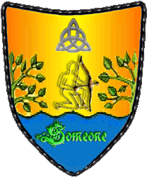

| Übersicht,
Anschläge und Stammtisch (RPG) |
|
Scherbenweite See-Olympiade (57  ) )
|
| Thorgrim Trotzstirn (RIP) |
Oh nein, bitte keine Diszipkinen mehr streichen, dann habe ich ja weniger möglichkeiten noch aufzuholen und hätte die ersten Speile riskanter gehandelt...
Sir Thorgrim Trotzstirn,
Vorsteher von Gathol Khazâd,
Priester im Dienste des einzig wahren Glaubens an Urvan,
Clanlord der Trotzstirne,
Verlobter der reizenden Agesha Goldsucher
Zur 14. Stunde am 62.Erntemond im Jahre 437 |
11.05.09 14:45
|
|
Baldur McMulenberc
  |
Verdammt, war das knapp *murmelt und seinem Gegner Respekt zollt, dann kreidebleich wird, als er die Auslosung der nächsten Gegner im Armdrücken sieht*
Baldur McMulenberc,
Giftzahn des Drachen,
Teilnehmer der 5. Segelregatta
Zur 14. Stunde am 62.Erntemond im Jahre 437 |
11.05.09 14:51
|
|
| Arándríel (RIP) |
*sucht sich in der nächsten Armdrücken Runde*
Kann mir jemand seine Brille leihen?
Arándríel,
Drittplaziertes Team der 5. Segelregatta
Zur 18. Stunde am 62.Erntemond im Jahre 437 |
11.05.09 15:37
|
|
Belálith Elriond
 |
Bitte nicht das Wettsaufen streichen... dafür trainiere ich schon seit Wochen!
*Deutet auf die 11. Gruppe rechts in der Liste mit Unschuld vom Lande als Arándriels Gegner* Viel Glück...
Sir Belálith Elriond,
Siegerteam der 5. Segelregatta
Zur 21. Stunde am 62.Erntemond im Jahre 437 |
11.05.09 16:29
|
|
| Chevonne Siobhan (RIP) |
Das Armdrücken zwischen Verru von Dignitas und Siocán Siobhán ist sehr ausgeglichen. Die Kontrahenten geben sich keine Blöße, naja, beinahe. Als Siocán Siobhán einen erneuten Versuch macht Verru von Dignitas zu überrumpeln, platzt der oberste Knopf von ihrem Trikot und fliegt ihm direkt ins Auge. Sieht er nun zuviel oder zuwenig?
Lady Siocán Siobhán,
Anführerin der glorreichen Nation "S.T.U.R.M.",
Süsseste Versuchung seit es Kakao gibt
Zur 23. Stunde am 62.Erntemond im Jahre 437 |
11.05.09 16:52
|
|
someone
  |
*hat in der ersten runde erstmal nur zugesehen und sich die tricks der anderen angeschaut. steht nun am hafenrand und macht probeschüsse auf eine weit entfernte zielscheibe. jeder schuss ist ein treffer. zu einem begleiter: *
ich hoffe das es so windstill bleibt wie jetzt, denn dann (aber nur dann) kann ich sicher mit hauke mithalten.
ansonsten lasse ich es dich mit deinen säurepfeilen probieren, die lassen sich nicht so leicht ablenken...
caomh: "aber ich würde niemals mit jedem schuss einen treffer landen, some. ich denke solang es nicht grade stürmt lasse ich dir den vortritt!"
Freiherr someone,
Vorsteher von Lorderon,
Verlobter der reizenden Sofia Nephterem
Zur 5. Stunde am 63.Erntemond im Jahre 437 |
11.05.09 18:19
|
|
| Verru von Dignitas (RIP) |
Vom Geschoss getroffen und der Sehkraft zum Teil beraubt hätte Verru von Dignitas doch tatsächlich fast die Konzentration verloren, konnte sich jedoch im letzten Augenblick halten. Erneut kam Verru von Dignitas ins Schwanken, als er sah, woher das Geschoss kam...
Oh meine liebe Siocán Siobhán, ihr kämpft wirklich mit allen Mitteln. Eure Schönheit blendet mich und es ist ein Graus, wenn ich daran denke Euch bei diesem Duell zu verletzen.
So leicht werde ich es Euch jedoch nicht machen meine Werte Dame.
Verru von Dignitas
Zur 11. Stunde am 63.Erntemond im Jahre 437 |
11.05.09 19:33
|
|
Wurzelsepp
  |
*rollt schon mal den Ärmel auf*
Baron Wurzelsepp,
Vorsteher von Tannhausen,
Marschall der Allianz,
Ehemann der reizenden Misha
Zur 23. Stunde am 84.Erntemond im Jahre 437 |
16.05.09 19:58
|
|
| Tinga Lómumir (RIP) |
*mit schmerzverzerrtem Gesaicht die erste Runde im Armdrücken immernoch versucht zu überstehen seit Sonntag schon*
Tinga Lómumir,
Verlobte des ehrenwerten Pyrgus
Zur 7. Stunde am 7.Dunkelfrost im Jahre 437 |
19.05.09 17:09
|
|
Galaton Dragus
  |
Organisation im Chaos
Die Auswertung des Bojenschiessen ist wegen organisatorischen Gründen um eine Woche verschoben worden. Leider war es mir nicht möglich politische wie auch gesellschaftliche Belange gleichermaßen zu behandeln und die Auswertung erfolgt eine Runde verzögert.
Davon abgesehen aber, brauchte das Armdrücken keiner Auswertung, denn hier war bis auf ein paar Ausnahmen alles eine klare Sache von Sieg oder Niederlage....oder eben Losentscheid, der bei einigen Partien leider für den ein oder anderen das Aus bedeutete.
Die ausgetragenen Duelle sind im beigefügten Pergament ersichtlich, ebenso die Paarungen der nächsten und somit 3. Vorrunde, wie bspw. das Duell der Könige....aber schaut selbst!
Die Duelle sind bis nächsten Sonntag auszutragen und der Wettkampfleitung vorzulegen.
* http://turi.ethernal-legends.com/Scherbe/Armdrucken2.xls
* Abgabe der Werte bis 24.05.09
König Galaton Dragus,
Vorsteher von Bethana,
Anführer der glorreichen Nation "Orden des Drachen",
Ehemann der reizenden Tonja Dragus
Zur 19. Stunde am 8.Dunkelfrost im Jahre 437 |
20.05.09 1:36
|
|
someone
|
*nach einem sehr ausgeglichenen und fairem duell gegen Black De Flag in welchem beide je zwei runden gewannen, und die zweite ohne sieger blieb, da beide gegner abrutschten, blieb die entscheidung über sieg und niederlage schließlich dem los überlassen. gespannt kommt some zum anschlagsbrett mit den ergebnissen und sucht seinen namen. erleichtert atmet er auf als er seinen namen eine runde weiter sieht und wundert sich wer wohl sein nächster gegner sein wird, da dort wo sein gegner stehen müsste "freilos" eingetrage steht* ..meinst wirklich ich bin dann automatisch die nächste runde weiter!? das wäre ja einfach! *hoff* ..aber vielleicht wird auch noch jmd. ausgelost als gegner? *nicht glauben will, dass sein begleiter wohl recht hat*
Freiherr someone,
Vorsteher von Lorderon,
Verlobter der reizenden Sofia Nephterem,
Handelsminister der Tajus
Zur 21. Stunde am 8.Dunkelfrost im Jahre 437 |
20.05.09 2:02
|
|
| Antaras (RIP) |
*zieht sich aus gesundheitlichen Gründen von der Olympiade zurück*
Antaras,
Priester im Dienste des einzig wahren Glaubens an Pheron
Zur 12. Stunde am 10.Dunkelfrost im Jahre 437 |
20.05.09 11:03
|
|
Baldur McMulenberc
|
*reicht öffentlich Protest ein*
Ich habe gegen Olga eindeutig gewonnen!
Sir Baldur McMulenberc,
Vorsteher von Drachenburg,
Giftzahn des Drachen,
Teilnehmer der 5. Segelregatta
Zur 1. Stunde am 11.Dunkelfrost im Jahre 437 |
20.05.09 14:04
|
|
someone
|
ja!?
*versucht sich an den wettkampf zu erinnern.. *
vllt. wurdest du disqualifiziert?
-oder ein schiedsrichter hat sich veran..
((hast du denn frist und regelgerecht deine werte abgegeben? -die sind in der tabelle garnicht aufgeführt!))
Freiherr someone,
Vorsteher von Lorderon,
Verlobter der reizenden Sofia Nephterem,
Handelsminister der Tajus
Zur 1. Stunde am 11.Dunkelfrost im Jahre 437 |
20.05.09 14:13
|
|
Baldur McMulenberc
|
Ich vermute eher das Versäumnis eines Schiedsrichters, mal sehe, was die Jury dazu sagt.
Sir Baldur McMulenberc,
Vorsteher von Drachenburg,
Giftzahn des Drachen,
Teilnehmer der 5. Segelregatta
Zur 11. Stunde am 11.Dunkelfrost im Jahre 437 |
20.05.09 16:21
|
|
Amhlaidh Doireann
 |
Per Losentscheid gewonnen...
Da hat mein Charme bestimmt etwas mit am Hut, so viel Glück kann man doch gar nicht haben. Hatte ich es doch bei den vorhergehenden Disziplinen auch nicht.
*Spendiert seinem Gegner einen Becher Kakao, um damit die sportliche Fairness und Respekt an Elániel Inglorion zu vermitteln*
Amhlaidh Doireann
Zur 6. Stunde am 15.Dunkelfrost im Jahre 437 |
21.05.09 13:44
|
|
Elániel Vanyië
  |
*Celoldor verbeugt sich vor Amhlaidh.* Ob es am Charme lag... *Er mustert den Wichtel, nimmt aber dankend den Becher entgegen. Sein Freund Schalasch steht grinsend hinter ihm und klopft ihm auf die Schulter.* Das wäre mir nicht passiert. Stemme das nächste Mal ein paar Bierfässer, dann solltest du beim nächsten Kampf auch einen Wichtel schlagen können. *Fröhlich brummend verschwindet er mit Celoldor in der nächsten Taverne.*
Baronesse Elániel Inglorion,
Vorsteherin von Dùn Thuatail,
Kardinälin im Dienste des einzig wahren Glaubens an Wendaria,
Anführerin der glorreichen Nation "Freie Siedler von Thuatail",
Ehefrau des ehrenwerten Orodeth Inglorion
Zur 11. Stunde am 29.Dunkelfrost im Jahre 437 |
24.05.09 21:14
|
|
Galaton Dragus
|
So, Stop! Einspruchsfrist vorbei!
*Die Kiste mit allen Beschwerden gestresst zuklappt und sich mit der Jury zur Beratung zurückzieht um in wenigen Stunden eine Auswertung zu verkünden*
König Galaton Dragus,
Vorsteher von Bethana,
Anführer der glorreichen Nation "Orden des Drachen",
Ehemann der reizenden Tonja Dragus
Zur 20. Stunde am 37.Dunkelfrost im Jahre 437 |
26.05.09 20:06
|
|
| Tinga Lómumir (RIP) |
*gähnt*
Tinga Lómumir,
Verlobte des ehrenwerten Pyrgus
Zur 2. Stunde am 51.Dunkelfrost im Jahre 437 |
29.05.09 22:19
|
|
| Thorgrim Trotzstirn (RIP) |
*grummelt*
Sir Thorgrim Trotzstirn,
Vorsteher von Gathol Khazâd,
Priester im Dienste des einzig wahren Glaubens an Urvan,
Clanlord der Trotzstirne,
Verlobter der reizenden Agesha Goldsucher
Zur 6. Stunde am 53.Dunkelfrost im Jahre 437 |
30.05.09 10:38
|
|
Inis Vitrin
  |
Hab ich irgendwas verpasst?
Lady Raziok
Zur 13. Stunde am 59.Dunkelfrost im Jahre 437 |
31.05.09 21:42
|
|
| Frances el Ferror (RIP) |
Nein die Juoren sind lediglich in einem unbefristeten Streik getreten ging dabei wohl um irgendwelche Kaffeepausen und liessen sich auch durch mahagonieraspeln nicht zum weiterarbeiten überreden.
*freundlich über Ihre Kakaotasse hinweg den Anwesenden zunickt aber sich denkt das diese Leute hier wohl auch mal mit ordentlicher Arbeit Ihre Zeit besser nutzen könnten. Rümpft das Näschen, trinkt einen Schluck und geht dann wieder Ihres Weges wobei man Sie murmeln hört* Ich riet Ihm ja schon vor Jahren seine Verwaltung durch vierteljährliche Reformen auf Trab zu halten die kommen sonst einfach nur auf dumme Gedanken.
Pfalzgräfin Frances el Ferror,
Vorsteherin von Castello el Ferror,
Anführerin der glorreichen Nation "Sheydanischer Freihandelsbund",
Leibwichtel Wasils
Zur 9. Stunde am 63.Dunkelfrost im Jahre 437 |
01.06.09 19:10
|
|
| Tinga Lómumir (RIP) |
...ja klar wir sind alles stinkfaule Verbrecher aber wenn ich was ausrichte dann sollte ich auch in der Lage sein das organisatorisch umzusetzen. Wahrscheinlich hat sich das Organisationskomitee mit den Prämien abgesetzt. Sowas nennt sich dann ehrliche Arbet. Alles klar...
Tinga Lómumir,
Verlobte des ehrenwerten Pyrgus
Zur 12. Stunde am 63.Dunkelfrost im Jahre 437 |
01.06.09 19:50
|
|
Klaus Störtebeker
  |
Hmm, zum Glück hat das Olympische Dorf bequeme Betten & ein gutes Bier in der Schenke ...
Baron Klaus Störtebeker,
Vorsteher von Caer Bannog,
Kapitän des Roten Teufels & Mitglied im Hohen Rat
Zur 24. Stunde am 63.Dunkelfrost im Jahre 437 |
01.06.09 22:34
|
|
| Thorgrim Trotzstirn (RIP) |
Ich bin für einen Neustart der Spiele, oder man möge sie Abbrechen!
Sir Thorgrim Trotzstirn,
Vorsteher von Gathol Khazâd,
Priester im Dienste des einzig wahren Glaubens an Urvan,
Clanlord der Trotzstirne,
Verlobter der reizenden Agesha Goldsucher
Zur 12. Stunde am 65.Dunkelfrost im Jahre 437 |
02.06.09 7:06
|
|
| Verru von Dignitas (RIP) |
Es ist wirklich traurig ... nun, wo meine Tage auf Scherben sich dem Ende neigen, war ich erfreut über diese Spiele. Sie weckten Erinnerungen aus früheren Zeiten.
Verru von Dignitas
Zur 6. Stunde am 66.Dunkelfrost im Jahre 437 |
02.06.09 11:20
|
|
| Tinga Lómumir (RIP) |
Ich war auch sehr erfreut über die Spiele und fand vor Allem die Berichterstattung vom Organisator ziemlich witzg und professionell.
Deshalb verstehe ich eigentlich überhaupt nicht, was eigentlich los ist. Aus welchem Grunde sollten die Spiele überhaupt neu angesetzt oder abgebrochen werden?
Wegen irgendwelcher Kaffeepausen? Das versteht wahrscheinlich bloß Jemnand der schon seit Jahrhunderten auf der Scherbe weilt. Für mich ergibt das wenig Sinn und je mehr ich darüber nachdenke desto mehr schmerzt mein Kopf. Aber die Hoffnung stirbt zuletzt und vielleicht siegt am Ende doch der Sport, um den es ja eigentlich dabei ging.
Tinga Lómumir,
Verlobte des ehrenwerten Pyrgus
Zur 12. Stunde am 67.Dunkelfrost im Jahre 437 |
02.06.09 18:20
|
|
| Ahab der Graue (RIP) |
((ooc: Ich meine irgendwo gelesen zu haben dass Galaton zur Zeit umzieht. Also lasst ihm doch die Zeit...))
Ahab der Graue
Zur 12. Stunde am 68.Dunkelfrost im Jahre 437 |
02.06.09 23:58
|
|
| Verru von Dignitas (RIP) |
Nun... mir rennt die Zeit davon.
Aus diesem Grund möchte ich, dass meine Spende zu beginn der Olympiade gestrichen wird. Der Betrag soll für die Finanzierung neuer Krautfelder genutzt werden.
Ich bitte daraum meinem Wunsch zu erfüllen...
Verru von Dignitas
Zur 23. Stunde am 87.Dunkelfrost im Jahre 437 |
07.06.09 12:58
|
|
someone
|
*mal wieder nach neuen ankündigungen zur olympiade schaut* *grummel* am wetter kanns nich liegen...
*sich dann auf eine wiese legt und die angenehme wärme genießt*
Freiherr someone,
Vorsteher von Lorderon,
Verlobter der reizenden Sofia Nephterem,
Handelsminister der Tajus
Zur 12. Stunde am 19.Saatmond im Jahre 438 |
12.06.09 13:25
|
|
Baldur McMulenberc
|
Die Ergebnisse des Armdrückens finden sich in der Zeitung, werter Freiherr.
Freiherr Baldur McMulenberc,
Vorsteher von Drachenburg,
Giftzahn des Drachen,
Teilnehmer der 5. Segelregatta
Zur 13. Stunde am 19.Saatmond im Jahre 438 |
12.06.09 13:45
|
|
someone
|
*aufschaut*
ich habe seit den ergebnissen der 1.runde - in der ausgabe vom... *kramt eine zeitung aus der tasche* ..8.Dunkelfrost, keine neuen ergebnisse gesehen. von den 200 Bojen von welchen ich noch nicht eine beschossen habe ganz zu schweigen...
habt ihr etwa neuigkeiten? *erwartet kein ja*
aber egal, ich vertraue darauf, dass galaton und die schiedsrichter bald wieder etwas verlauten lassen und genieße das wetter hier in johannesburg.
*sich wieder seinem buch widmet*
Freiherr someone,
Vorsteher von Lorderon,
Verlobter der reizenden Sofia Nephterem,
Handelsminister der Tajus
Zur 15. Stunde am 19.Saatmond im Jahre 438 |
12.06.09 14:16
|
|
Baldur McMulenberc
|
Wie bereits erwähnt, in der Zeitung findet ihr die Ergebnisse der zweiten Runde des Armdrückens.
Freiherr Baldur McMulenberc,
Vorsteher von Drachenburg,
Giftzahn des Drachen,
Teilnehmer der 5. Segelregatta
Zur 16. Stunde am 19.Saatmond im Jahre 438 |
12.06.09 14:21
|
|
someone
|
*vermutet das es sich um ein missverständniß handelt und ist eigendlich schon leid dies aus zu diskutieren*
im armdrücken gabs doch bisher nur die vorrunde und die erste wettkampfrunde, oder?
-das war dann natürlich gewissermaßen schon die zweite runde armdrücken...
aber jedenfalls gibts seit dem 8.dunkelfrost keine neuigkeiten oder?
*sich wieder hinlegt und hinunter richtung meer blickt*
Freiherr someone,
Vorsteher von Lorderon,
Verlobter der reizenden Sofia Nephterem,
Handelsminister der Tajus
Zur 21. Stunde am 28.Saatmond im Jahre 438 |
14.06.09 17:55
|
|
Baldur McMulenberc
|
Doch, gibt es, nämlich die zweite Hauptrunde, und wie ich bereits schrieb, stehen die Ergebnisse in der Zeitung. Ihr seid übrigens auf Grund eines Freiloses eine Runde weiter gekommen.
*wundert sich so langsam über die Begriffsresistenz einiger*
Freiherr Baldur McMulenberc,
Vorsteher von Drachenburg,
Giftzahn des Drachen,
Teilnehmer der 5. Segelregatta
Zur 9. Stunde am 29.Saatmond im Jahre 438 |
14.06.09 20:46
|
|
Klaus Störtebeker
|
Vielleicht solltet Ihr erwähnen, daß mit der Zeitung der Freiheitsbote gemeint war und dort das "Interview mit Galaton".
((Wer´s nicht findet, die Ergebnisse: http://turi.ethernal-legends.com/Scherbe/Achtelfinale.xls))
Nun, wie auch immer, so gut das Bier auch war, ich muß mich nun doch mal völlig anderen Dingen widmen, sonst hört das Schädelbrummen nicht mehr auf. Daher möchte ich mich hiermit offiziell für die weiteren Disziplinen abmelden & wünsche den verbleibenden Teilnehmern viel Erfolg!
Baron Klaus Störtebeker,
Vorsteher von Caer Bannog,
Kapitän des Roten Teufels & Mitglied im Hohen Rat
Zur 7. Stunde am 30.Saatmond im Jahre 438 |
15.06.09 2:00
|
|
Übersicht,
Anschläge und Stammtisch (RPG)
|